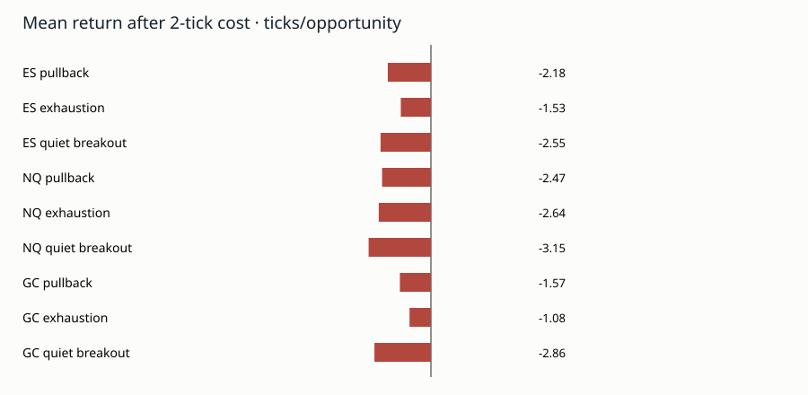

Run 20260924T004900Z_rxv07 · chart-price research · export timezone unverified.
Result: 0 of 9 primary comparisons pass the declared candidate screen. All calendar blocks were previously inspected; the development block also calibrates the quiet-period threshold.
Full observed sessions are primary. The three primary charts are ES 6RXV, NQ 20RXV, and GC 20RXV. Net returns include a two-tick round-trip cost screen.

| product | idea | cohort | split | opportunities | trades | sessions | mean_ticks | mean_net_2_ticks | p05_ticks | break_even_cost_ticks_per_trade |
|---|---|---|---|---|---|---|---|---|---|---|
| ES | pullback | extreme_break | all | 9731 | 9731 | 532 | -0.185 | -2.185 | -28.000 | -0.185 |
| ES | pullback | no_break | all | 1006 | 1006 | 362 | -0.333 | -2.333 | -28.000 | -0.333 |
| ES | pullback | ordinary | all | 44552 | 44552 | 533 | -0.252 | -2.252 | -14.000 | -0.252 |
| ES | pullback | unfiltered | all | 10737 | 10737 | 532 | -0.199 | -2.199 | -28.000 | -0.199 |
| ES | exhaustion | early_policy | all | 4623 | 4623 | 510 | -0.126 | -2.126 | -35.000 | -0.126 |
| ES | exhaustion | short_run_control | all | 25504 | 25504 | 534 | -0.255 | -2.255 | -37.000 | -0.255 |
| ES | exhaustion | wait_policy | all | 4623 | 3287 | 510 | -0.104 | -1.526 | -28.000 | -0.146 |
| ES | quiet_breakout | not_quiet | all | 25753 | 25753 | 498 | -0.349 | -2.349 | -28.000 | -0.349 |
| ES | quiet_breakout | quiet | all | 6894 | 6894 | 527 | -0.550 | -2.550 | -28.000 | -0.550 |
| NQ | pullback | extreme_break | all | 25806 | 25806 | 534 | -0.473 | -2.473 | -87.000 | -0.473 |
| NQ | pullback | no_break | all | 866 | 866 | 374 | 2.418 | 0.418 | -87.000 | 2.418 |
| NQ | pullback | ordinary | all | 112442 | 112442 | 534 | -0.598 | -2.598 | -45.000 | -0.598 |
| NQ | pullback | unfiltered | all | 26672 | 26672 | 534 | -0.379 | -2.379 | -87.000 | -0.379 |
| NQ | exhaustion | early_policy | all | 12308 | 12308 | 531 | -1.024 | -3.024 | -107.000 | -1.024 |
| NQ | exhaustion | short_run_control | all | 61791 | 61791 | 534 | -0.255 | -2.255 | -126.000 | -0.255 |
| NQ | exhaustion | wait_policy | all | 12308 | 8570 | 531 | -1.248 | -2.641 | -86.000 | -1.793 |
| NQ | quiet_breakout | not_quiet | all | 70059 | 70059 | 526 | -0.862 | -2.862 | -87.000 | -0.862 |
| NQ | quiet_breakout | quiet | all | 12276 | 12276 | 512 | -1.155 | -3.155 | -85.000 | -1.155 |
| GC | pullback | extreme_break | all | 6455 | 6455 | 504 | 0.428 | -1.572 | -90.000 | 0.428 |
| GC | pullback | no_break | all | 197 | 197 | 117 | -1.736 | -3.736 | -93.000 | -1.736 |
| GC | pullback | ordinary | all | 28634 | 28634 | 532 | -0.216 | -2.216 | -47.000 | -0.216 |
| GC | pullback | unfiltered | all | 6652 | 6652 | 505 | 0.364 | -1.636 | -90.000 | 0.364 |
| GC | exhaustion | early_policy | all | 3010 | 3010 | 445 | 0.142 | -1.858 | -109.000 | 0.142 |
| GC | exhaustion | short_run_control | all | 15782 | 15782 | 533 | -0.519 | -2.519 | -126.000 | -0.519 |
| GC | exhaustion | wait_policy | all | 3010 | 2126 | 445 | 0.329 | -1.084 | -87.000 | 0.466 |
| GC | quiet_breakout | not_quiet | all | 18972 | 18972 | 505 | -0.194 | -2.194 | -90.000 | -0.194 |
| GC | quiet_breakout | quiet | all | 1861 | 1861 | 502 | -0.861 | -2.861 | -85.000 | -0.861 |
| product | idea | gross_difference_ticks | difference_ticks | lower | upper | n_sessions |
|---|---|---|---|---|---|---|
| ES | pullback | 0.014 | 0.014 | -0.132 | 0.159 | 532 |
| ES | exhaustion | 0.022 | 0.600 | -0.164 | 1.443 | 510 |
| ES | quiet_breakout | -0.201 | -0.201 | -0.995 | 0.588 | 533 |
| NQ | pullback | -0.094 | -0.094 | -0.219 | 0.031 | 534 |
| NQ | exhaustion | -0.224 | 0.383 | -1.086 | 1.950 | 531 |
| NQ | quiet_breakout | -0.293 | -0.293 | -1.794 | 1.308 | 534 |
| GC | pullback | 0.064 | 0.064 | -0.194 | 0.356 | 505 |
| GC | exhaustion | 0.187 | 0.774 | -2.170 | 4.131 | 445 |
| GC | quiet_breakout | -0.667 | -0.667 | -4.785 | 2.939 | 532 |
| product | idea | later_blocks_and_concentration_pass | familywise_interval_positive | provisional_candidate |
|---|---|---|---|---|
| ES | pullback | False | False | False |
| ES | exhaustion | False | False | False |
| ES | quiet_breakout | False | False | False |
| NQ | pullback | False | False | False |
| NQ | exhaustion | False | False | False |
| NQ | quiet_breakout | False | False | False |
| GC | pullback | False | False | False |
| GC | exhaustion | False | False | False |
| GC | quiet_breakout | False | False | False |
| product | stop_units | target_units | events | ambiguous_both_hit | mean_lower_ticks | mean_upper_ticks |
|---|---|---|---|---|---|---|
| ES | 1 | 1 | 9731 | 3799 | -0.842 | 3.843 |
| ES | 2 | 1 | 9731 | 2083 | -1.088 | 2.765 |
| ES | 3 | 1 | 9731 | 1116 | -1.066 | 1.686 |
| ES | 4 | 1 | 9731 | 529 | -1.020 | 0.611 |
| GC | 1 | 1 | 6455 | 2148 | -0.889 | 12.421 |
| GC | 2 | 1 | 6455 | 1029 | -0.933 | 8.632 |
| GC | 3 | 1 | 6455 | 456 | -0.796 | 4.855 |
| GC | 4 | 1 | 6455 | 117 | -0.743 | 1.069 |
| NQ | 1 | 1 | 25806 | 8309 | -0.677 | 12.202 |
| NQ | 2 | 1 | 25806 | 4099 | -1.228 | 8.303 |
| NQ | 3 | 1 | 25806 | 1894 | -1.467 | 4.404 |
| NQ | 4 | 1 | 25806 | 552 | -1.632 | 0.507 |
See report.md, tables, and event ledgers for timing, tails, split results, and limitations.